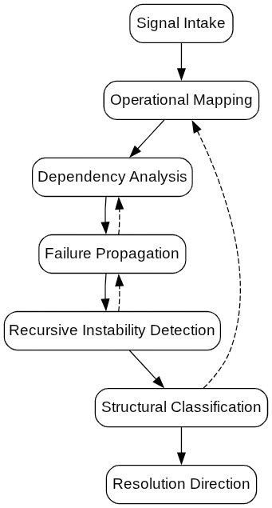

Structural analysis for unstable operational environments, recursive failure states, and system-level ambiguity.
Operational Systems Diagnostics (OSD) is a structured diagnostic framework designed to identify where operational coherence begins to degrade across systems, workflows, decision layers, and AI-assisted environments.
OSD operates beyond surface symptoms by mapping dependency chains, identifying recursive instability, and isolating structural failure propagation.
OSD identifies how instability propagates through interconnected systems.
Rather than treating failures as isolated events, the framework analyses the relationships between:
The objective is to determine whether a failure originates from:
Structural traversal and dependency-mapping sequence.

OSD operates through structured Human-in-the-Loop diagnostic analysis.
Engagements focus on decomposing operational complexity into observable structural relationships that can be analysed, stabilised, and clarified.
The process is diagnostic and interpretive — not generic consulting or advisory abstraction.
Enter operational diagnostic intake through structured consultation.
Book Discovery Call